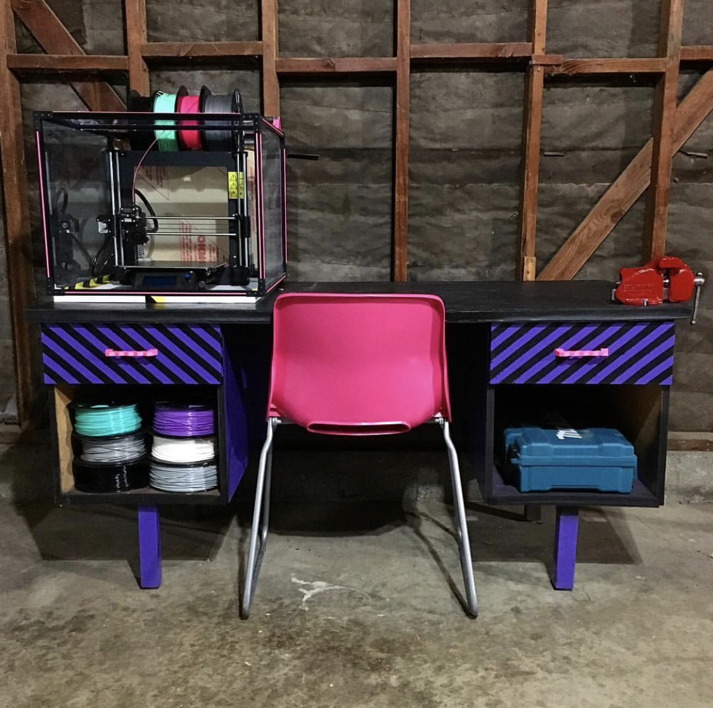

Project 1 - My Prusa i3 Mk2.5s 3D Printer

I have been printing with my Prusa 3D printer (pictured above) for over 3 years now. The Prusa line of printers originates from the Czech Republic and arrived at my house as kit. This led to a lot of future tinker and upgrades with my printer. It has been very helpful for academic and personal projects. One of my favorite prints I made with it was a spikey red planter that I keep my Japanese peace lily in. In the near future, I hope to add a livestream of my printer in action using Octoprint and a Raspberry Pi. This live stream will be linked to this portfolio website
Currently I am printing out ornaments for the holidays out of PETG. Some of these ornaments will be used to decorate my home's Christmas tree, while the others will be used as gifts. This year's theme is 2020. More photos to come!